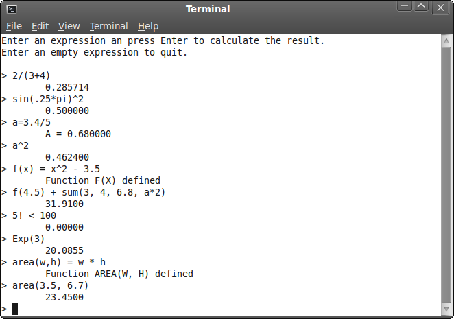

Java expression parser (extensive)
Description
On this page you find the source code for an expression parser written with Java. It is a console program and supports all common mathematical features. Furthermore, you can assign your own variables and functions. The project is written using Eclipse, the most well known Java IDE. The parser works in two steps: first, the expression string is parsed into an object tree. Next, the object tree is evaluated and the results are returned.
To run the program, you can run one of the provided batch files,
or you can enter java -jar Parser.jar on a command line.
Features
The features of the expression parser are:
-
Operators:
- & | << >>
- = <> < > <= >=
- + -
- * / % ||
- ^
- !
-
Functions:
- Abs, Exp, Sign, Sqrt, Log, Log10
- Sin, Cos, Tan, Asin, Acos, Atan, Atan2
- Factorial
- Avg, Max, Median, Min, Prod, Std, Sum, Var
- You can assign new functions, like f(x,y)=2*x^y+3
-
Variables:
- Built-in: Pi, e
- You can assign new variables, like myvar=3.4/2
-
Other:
- Support for scientific notation
- Built-in error handling
Download
You can download the source code and binaries below.
 expression_parser_java_ext.zip (133kB)
expression_parser_java_ext.zip (133kB)
Screenshot
As Java programs can be run on various platforms, you can execute the program on Windows, Linux, or Macintosh. Here is a screenshot taken on Ubuntu.

Author
Jos de Jong
September 2010